1080C80 exhaust gas water heat exchanger for egr valve r r
- Path
- Procedures > 10 ENGINE > 1080 EXHAUST EMISSION CONTROL SYSTEM > 1080C exhaust gas recirculation system (e.g.r.) > 1080C80 exhaust gas water heat exchanger for egr valve r r
- Kind
- repair procedure (removal / refitting; the operation number is the code)
- Applies to
- engines: 1.9 JTD 8v , 1.9 JTD 16v, 2.4 JTD 10v, 2.4 JTD 20v; all production periods
- Interactive page
- https://sloeber94.github.io/elrnDB-a156/en/#/3237844
Applies to: engines: 1.9 JTD 8v ; all production periods; only with equipment: Euro 3
 Removing
Removing
 Refitting
RefittingPosition the vehicle on the ramp.
Proceed with removal 5530B10 battery - r+r .
Proceed with removal 7055B54 under-engine guard - r r .
1. Undo the lower bolt securing the exhaust gas recirculation pipe to the exhaust manifold.
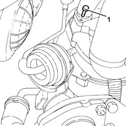
Applies to: engines: 1.9 JTD 8v ; all production periods; only with equipment: Euro 3
1. Undo the upper bolt securing the exhaust gas recirculation pipe to the exhaust manifold.
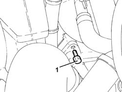
Applies to: engines: 1.9 JTD 8v ; all production periods; only with equipment: Euro 3
1. Disconnect the electrical connection from the engine coolant temperature sensor.
 | Name | Connector |
|---|---|---|
1 | Engine temperature sender unit |
2. Disconnect the upper coolant inlet hose to the radiator from the thermostat and drain the coolant.
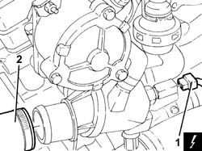
Applies to: engines: 1.9 JTD 8v ; all production periods; only with equipment: Euro 3
1. Undo the bolts securing the exhaust gas supply pipe to the E.G.R. valve.
2. Loosen the bolts securing the starter motor and remove the wiring and piping bracket after releasing the wires and pipes from the bands on the bracket.
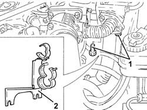
Applies to: engines: 1.9 JTD 8v ; all production periods; only with equipment: Euro 3
1. Disconnect, from the thermostat, the coolant supply pipe to the climate control system heater.
2. Disconnect the outlet pipe from the climate control system heater (2a) from the thermostat T-connector and the delivery pipe to the rigid fluid intake pipe to the coolant pump (2b).
3. Disconnect the coolant return pipe to the coolant reservoir from the thermostat.
4. Disconnect the coolant intake pipe (4a) and the coolant outlet pipe (4b) from the EGR water/exhaust gas heat exchanger.
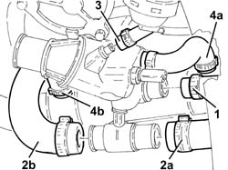
Applies to: engines: 1.9 JTD 8v ; all production periods; only with equipment: Euro 3
1. Undo the nut fixing the water/exhaust gas heat exchanger for the E.G.R. system to the thermostat.
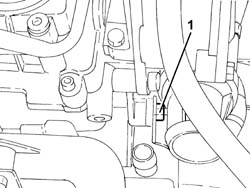
Applies to: engines: 1.9 JTD 8v ; all production periods; only with equipment: Euro 3
1. Undo the bolt (1a) and the nut (1b) securing the EGR water/exhaust gas heat exchanger to the cylinder head.
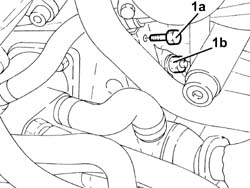
Applies to: engines: 1.9 JTD 8v ; all production periods; only with equipment: Euro 3
Move back the EGR water/exhaust gas heat exchanger as far back as necessary.
1. Undo the bolts (1a) and remove thermostat (1b) complete with o-ring.
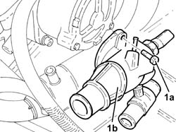
Applies to: engines: 1.9 JTD 8v ; all production periods; only with equipment: Euro 3
1. Remove the EGR system water/exhaust valve heat exchanger.
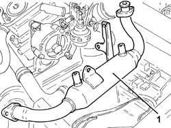
Applies to: engines: 1.9 JTD 8v ; all production periods; only with equipment: Euro 3
Refitting
RemovingRefit the EGR system water/exhaust gas heat exchanger.
Place the thermostat back in its housing and fix it tightening the bolts to the recommended torque.
 | Fastening | Component | Ø | Value (daNm) |
|---|---|---|---|---|
- | Bolt | THERMOSTAT | M8 | (Cylinder head side) 2.1- 2.6 |
Tighten the bolt and nut securing the EGR water/exhaust gas heat exchanger to the cylinder head.
Tighten the nut securing the EGR system water/exhaust valve heat exchanger to the thermostat.
Connect the coolant inlet and outlet pipes to the EGR water/exhaust gas heat exchanger.
Connect the coolant return pipe to the coolant reservoir to the thermostat.
Connect the outlet pipe from the climate control system heater and the delivery pipe to the rigid inlet pipe to the coolant pump to the thermostat T-connector.
Connect the coolant supply pipe to the climate control system heater to the thermostat.
Refit the wiring and piping bracket and secure by tightening the starter motor bolts to the specified torque.
| Fastening | Component | Ø | Value (daNm) |
|---|---|---|---|---|
- | Bolt | STARTER MOTOR | M8 | (Gearbox side) 2.3 ÷ 2.8 |
Secure the electrical wiring and pipes using the bands on the bracket.
Tighten the bolts securing the exhaust gas recirculating pipe to the EGR valve.
Connect the upper coolant inlet hose to the radiator to the thermostat.
Connect the electrical connection to the engine coolant temperature sensor.
Tighten the upper bolt securing the exhaust gas recirculation pipe to the exhaust manifold
Tighten the lower bolt securing the exhaust gas recirculation pipe to the exhaust manifold
Proceed with refitting 7055B54 under-engine guard - r r .
Proceed with refitting 5530B10 battery - r+r .
Remove the car from the ramps.
Applies to: engines: 2.4 JTD 10v; all production periods; only with equipment: Euro 3
Removing
RefittingPosition the vehicle on the ramp.
Proceed with removal 1016A10 sound-proofing cover - r + r .
1. Loosen the band (1a) and disconnect the air delivery hose from the heat exchanger to the intake manifold (1b), throttle body side and move it aside.
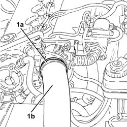
Applies to: engines: 2.4 JTD 10v; all production periods; only with equipment: Euro 3
Proceed with removal 5530B10 battery - r+r .
Proceed with removal 7055B54 under-engine guard - r r .
Proceed with removal 1072C44 exhaust manifold heat shield on bulkhead - r+r .
1. Disconnect the electrical connection from the engine coolant temperature sensor and release the electrical wiring from the band.
| Name | Connector |
|---|---|---|
1 | Engine temperature sender unit |
2. Disconnect the upper coolant inlet hose to the radiator, thermostat side.
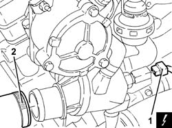
Applies to: engines: 2.4 JTD 10v; all production periods; only with equipment: Euro 3
1. Disconnect the coolant supply pipe to the air conditioning system heater, thermostat side.
2. Disconnect the climate control system heater outlet pipe, thermostat side from the thermostat T connector.
3. Disconnect the coolant return pipe to the engine coolant reservoir, thermostat side.
4. Disconnect the coolant intake pipe (4a) and the coolant outlet pipe (4b) from the EGR water/exhaust gas heat exchanger.
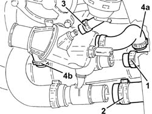
Applies to: engines: 2.4 JTD 10v; all production periods; only with equipment: Euro 3
1. Disconnect the pipe from the thermostat T connector to the water pump rigid coolant inlet pipe, rigid pipe side.
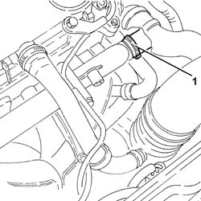
Applies to: engines: 2.4 JTD 10v; all production periods; only with equipment: Euro 3
1. Undo the bolts fixing the E.G.R. pipe, exhaust manifold side.
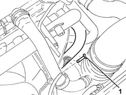
Applies to: engines: 2.4 JTD 10v; all production periods; only with equipment: Euro 3
1. Undo the bolts fixing the E.G.R. pipe, E.G.R. system solenoid valve side.
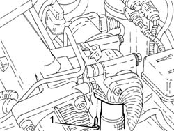
Applies to: engines: 2.4 JTD 10v; all production periods; only with equipment: Euro 3
1. Undo the bolt fixing the vacuum pipe mounting bracket.
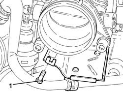
Applies to: engines: 2.4 JTD 10v; all production periods; only with equipment: Euro 3
1. Tighten the bolts fixing the water/exhaust gas heat exchanger for the E.G.R. system to the air chamber.
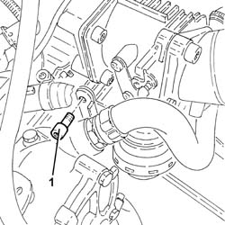
Applies to: engines: 2.4 JTD 10v; all production periods; only with equipment: Euro 3
1. Undo the bolts fixing the water/exhaust gas heat exchanger for the E.G.R. system to the thermostat fastening pin.
Applies to: engines: 2.4 JTD 10v; all production periods; only with equipment: Euro 3
1. Undo the bolts (1a) and remove thermostat (1b) complete with o-ring.
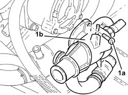
Applies to: engines: 2.4 JTD 10v; all production periods; only with equipment: Euro 3
1. Remove the EGR system water/exhaust valve heat exchanger.
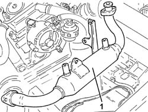
Applies to: engines: 2.4 JTD 10v; all production periods; only with equipment: Euro 3
Refitting
RemovingRefit the EGR system water/exhaust valve heat exchanger
Place the thermostat complete with O-ring back in its housing and fix it tightening the bolts to the recommended torque.
| Fastening | Component | Ø | Value (daNm) |
|---|---|---|---|---|
- | Bolt | THERMOSTAT | M8 | (Cylinder head side) 2.1- 2.6 |
Tighten the nut securing the EGR system water/exhaust valve heat exchanger to the thermostat fastening pin.
Tighten the bolts fixing the water/exhaust gas heat exchanger for the E.G.R. system to the air chamber.
Tighten the bolt securing the vacuum pipe mounting brackets.
Tighten the bolts fixing the E.G.R. pipe, E.G.R. system solenoid valve side.
Tighten the bolts fixing the E.G.R. pipe, exhaust manifold side.
Connect the pipe from the thermostat T connector to the water pump rigid coolant inlet pipe, rigid pipe side.
Connect the engine coolant inlet pipe and the engine coolant outlet pipe to the E.G.R. water/exhaust gas heat exchanger.
Connect the coolant return pipe to the engine coolant reservoir, thermostat side.
Connect the climate control system heater outlet pipe, thermostat side to the thermostat T connector.
Connect the engine coolant supply pipe from the climate control system heater, thermostat side.
Connect the upper coolant inlet hose to the radiator, thermostat side.
Connect the electrical connection to the engine coolant temperature sensor and fasten the electrical wiring.
Proceed with refitting 1072C44 exhaust manifold heat shield on bulkhead - r+r .
Proceed with refitting 7055B54 under-engine guard - r r .
Proceed with refitting 5530B10 battery - r+r .
Connect the air supply hose from the heat exchanger to the inlet manifold, throttle body side, and tighten the band.
Proceed with refitting 1016A10 sound-proofing cover - r + r .
Supply the engine cooling system with the recommended fluid.
 | Type | Component | Name | Qty. |
|---|---|---|---|---|
- | Fluid [l] | ENGINE COOLING CIRCUIT | Mixture 50% Paraflu11 for Alfa Romeo/distilled water | 6.8 |
Remove the car from the ramps.
Applies to: engines: 1.9 JTD 16v; all production periods
Removing
RefittingPosition the vehicle on the ramp
Proceed with removal 1016A10 sound-proofing cover - r + r
Proceed with removal 5530B10 battery - r+r
Proceed with removal 5530B52 Battery DRIP TRAY/SUPPORT - R.R.
Proceed with removal 7055B54 under-engine guard - r r
1. Loosen the band and disconnect the coolant supply to from the water/exhaust gas heat exchanger for the E.G.R. system, heat exchanger side.
2. Loosen the band and disconnect the coolant outlet pipe from the water/exhaust gas heat exchanger for the E.G.R. system, heat exchanger side.
3. Loosen the band and disconnect the coolant return pipe to the climate control heater, thermostat side.
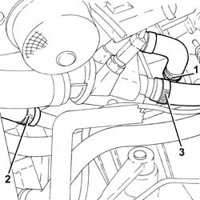
Applies to: engines: 1.9 JTD 16v; all production periods
1. Undo the bolts fixing the exhaust gas outlet pipe to the water/exhaust gas heat exchanger for the E.G.R. system, E.G.R. system solenoid valve side.
2. Loosen the band (2a) and remove the exhaust gas outlet pipe from the E.G.R. system water/exhaust gas heat exchanger (2b).
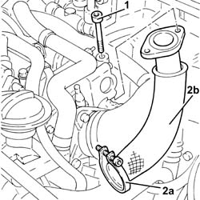
Applies to: engines: 1.9 JTD 16v; all production periods
1. Undo the bolts fixing the exhaust gas inlet pipe to the water/exhaust gas heat exchanger for the E.G.R. system, exhaust manifold side.
2. Loosen the band (2a) and remove the E.G.R. system water/exhaust gas heat exchanger exhaust gas inlet pipe (2b).
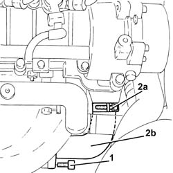
Applies to: engines: 1.9 JTD 16v; all production periods
1. Undo the bolts (1a) and remove the E.G.R. system water/exhaust gas heat exchanger (1b).
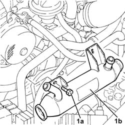
Applies to: engines: 1.9 JTD 16v; all production periods
Refitting
RemovingRefit the EGR system water/exhaust valve heat exchanger in its seating and secure it to the cylinder head using the bolts.
1. Place the E.G.R. system water/exhaust gas heat exchanger exhaust gas inlet pipe (1a) back in its housing and tighten the band (1b).
2. Tighten the bolts fixing the exhaust gas inlet pipe to the water/exhaust gas heat exchanger for the E.G.R. system, exhaust manifold side to the recommended torque.
| Fastening | Component | Ø | Value (daNm) |
|---|---|---|---|---|
2 | Bolt | WATER/GAS HEAT EXCHANGER FOR EGR SYSTEM | M8 | (Exhaust manifold side 23 28 |
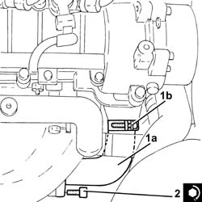
Applies to: engines: 1.9 JTD 16v; all production periods
1. Place the E.G.R. system water/exhaust gas heat exchanger exhaust gas outlet pipe (1a) back in its housing and tighten the band (1b).
2. Tighten the bolts fixing the exhaust gas outlet pipe to the water/exhaust gas heat exchanger for the E.G.R. system, E.G.R. system solenoid valve side to the recommended torque.
| Fastening | Component | Ø | Value (daNm) |
|---|---|---|---|---|
2 | Bolt | WATER/GAS HEAT EXCHANGER FOR EGR SYSTEM | M8 | (E.G.R.) solenoid valve side 2.3 ÷ 2.8 |
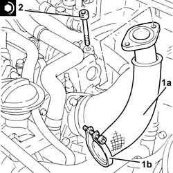
Applies to: engines: 1.9 JTD 16v; all production periods
Connect the engine coolant return pipe from the climate control system heater, thermostat side, and tighten the band.
Connect the coolant outlet pipe from the E.G.R. water/exhaust gas heat exchanger, heat exchanger side, and tighten the band.
Connect the engine coolant supply pipe to the EGR system water/exhaust gas heat exchanger, heat exchanger side and tighten the band.
Proceed with refitting 7055B54 under-engine guard - r r
Proceed with refitting 5530B52 Battery DRIP TRAY/SUPPORT - R.R.
Proceed with refitting 5530B10 battery - r+r
Refill the engine cooling system with coolant 0010T20 coolant change .
Proceed with refitting 1016A10 sound-proofing cover - r + r
Remove the car from the ramps.
Applies to: engines: 2.4 JTD 20v; all production periods
Removing
RefittingPosition the vehicle on the ramp.
Proceed with removal 1016A10 sound-proofing cover - r + r .
Proceed with removal 5530B10 battery - r+r .
Proceed with removal 5530B52 Battery DRIP TRAY/SUPPORT - R.R. .
Proceed with removal 1048B50 turbo charger intercooler - r + r .
Proceed with removal 7055B54 under-engine guard - r r .
1. Disconnect the rapid connector and disconnect the lower radiator coolant outlet hose, radiator side.
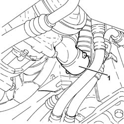
Applies to: engines: 2.4 JTD 20v; all production periods
1. Loosen the band and disconnect the coolant return pipe from the climate control heater, water pump rigid inlet pipe side.
2. Loosen the band and disconnect the coolant outlet pipe from the water/exhaust gas heat exchanger for the E.G.R. system, water pump rigid coolant inlet pipe side.
3. Undo the bolts (3a), loosen the collar (3b) and remove the exhaust gas recirculation pipe (3c).
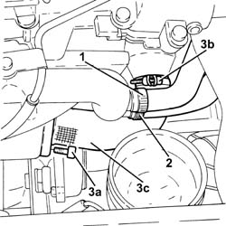
Applies to: engines: 2.4 JTD 20v; all production periods
1. Undo the bolts (1a), loosen the collar (1b) and remove the exhaust gas recirculation pipe (1c).
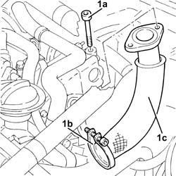
Applies to: engines: 2.4 JTD 20v; all production periods
1. Loosen the band and disconnect the coolant return pipe to the climate control heater, thermostat side.
2. Loosen the band and disconnect the coolant supply to from the water/exhaust gas heat exchanger for the E.G.R. system, heat exchanger side.
3. Loosen the band and disconnect the coolant outlet pipe from the water/exhaust gas heat exchanger for the E.G.R. system, heat exchanger side, and remove it.
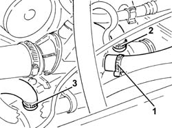
Applies to: engines: 2.4 JTD 20v; all production periods
1. Undo the bolts (1a) and remove the E.G.R. system water/exhaust gas heat exchanger (1b).
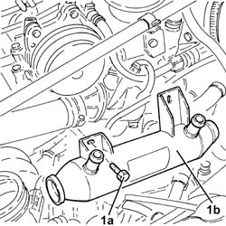
Applies to: engines: 2.4 JTD 20v; all production periods
Refitting
RemovingRefit the EGR system water/exhaust valve heat exchanger in its seating and secure it with the bolts.
Refit in its seating the engine coolant outlet pipe from the EGR system water/exhaust gas heat exchanger, connect it to the heat exchanger and tighten the band.
Connect the engine coolant supply pipe to the EGR system water/exhaust gas heat exchanger, heat exchanger side and tighten the band.
Connect the engine coolant return pipe from the climate control system heater, thermostat side, and tighten the band.
Refit the exhaust gas recirculation pipes in their seatings and secure them with the collars and bolts.
Connect the coolant outlet pipe from the E.G.R. system water/exhaust gas heat exchanger to the water pump rigid inlet pipe and tighten the band.
Connect the coolant return hose from the climate control heater on the side of the rigid inlet pipe to the water pump and do up the band.
Connect the lower coolant outlet hose from the radiator, radiator side.
Proceed with refitting 1048B50 turbo charger intercooler - r + r .
Proceed with refitting 5530B52 Battery DRIP TRAY/SUPPORT - R.R. .
Proceed with refitting 5530B10 battery - r+r .
Proceed with refitting 1016A10 sound-proofing cover - r + r .
Refill the engine cooling system with coolant 0010T20 coolant change .
Proceed with refitting 7055B54 under-engine guard - r r .
Remove the car from the ramps.